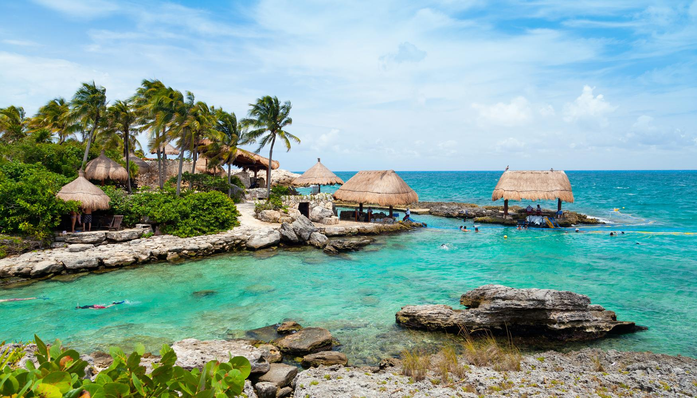

Se recuerda que en las situaciones de pandemia que vivimos es recomendable no realizar viajes, pero si aún así se
decide viajar se le recuerda en esta página las medidas de seguridad que se deben tomar.
Téngase en
cuenta que las restricciones dependen en muchos casos del origen, destino, nacionalidad,...
No debe viajar si:
- Tiene síntomas compatibles con COVID-19.
- Ha sido diagnosticado de
COVID-19 en los últimos 7 días.
- Si ha tenido contacto estrecho con un caso positivo.
- Si el
país/zona es considerado como alto riesgo de COVID-19.
Requisitos generales si no está vacunado:
- Test de COVID-19 negativo.
- Formulario de
Localización de Pasajeros.
- En algunos países pueden llegar a solicitarte una carente de entre 10 y 14 días.
Requisitos generales si está vacunado:
- El pasajero será posiblimente exento de presentar el test
de antígenos negativo.
- Presentar cerficado COVID-19 de vacunas.
Obviamos en estos requisitos las restricciones básicas que llevamos aplicando en estos dos años de pandemia (uso de mascarilla, distancia social, gel hidroalcohólico...)
Dubái: se coloca en la cúspide de la pirámide, siendo la ciudad más visitada en 2021 (también fue la más
visitada del mundo en 2019).
Dubái es uno de los siete emiratos que conforman los Emiratos Árabes Unidos. El
turismo de esta ciudad se ha visto favorecido por su ubicación geográfica, estando situado en la costa del golfo
Pérsico, en Medio Oriente. Dubái alberga varias construcciones y obras de infraestructura notables como los
hoteles de lujo Burj Al Arab y Burj Khalifa
, siendo este último el más alto del
mundo, contando con 828 m de altura.
Qué ver y hacer en Dubái:
1. Burj Khalifa: es el edicio más alto del mundo, con 828 metros de altura,
pues se puede ver desde 100 km de distancia. Este hotel cuenta con un observatorio en la planta 148, a 555
metros. Las vistas son chocantes, pues es el único edifico tan alto en una ciudad rodeaada de desierto. Este
edifio cuenta con plantas de hotel, oficinas, restaurante, piscina y mezquita
2. Dubai Fountains: para seguir con los récords, estas fuentes danzantes son las más grandes del mundo. Situadas a los pies del Burj Khalifa, hacen un espectáculo diario con agua, luces y música. Los chorros de agua llegan a 275 metros de altura.
3. The Dubai Mall: se trata de un centro comercial que cuenta con 1200 tiendas y restaurantes, galerías ambientadas como si fueran un zoco, un parque temático para niños, una cascada interior, una pista de patinaje sobre hielo, un acuario y un centro médico
4. Excursión al desierto: el desierto es algo obligado que ver en Dubái. Se encuentra justo a las afueras de la ciudad. No te pierdas una travesía en 4x4 o quad por las dunas, una experiencia de adrenalina pura.
5. Burj al Arab: es el hotel más alto del mundo, con 321 m de altura. Cuenta con una clasificación de 7 estrellas, por lo que, además de ser el más alto del mundo, es también el más lujoso. Se ubica en su propia isla artificial, a la que solo se puede acceder si eres cliente del hotel, aunque también se puede acceder reservando una comida
6. Barrio histórico Al Fahidi: la parte más tradicional de la ciudad es preciosa. Este barrio fue construido a finales del siglo XIX y allí vivían los mercaderes persas. Los edificios de yeso y coral de estilo árabe se encuentran perfectamente conservados. También existen unos pequeños museos dedicados a las monedas del país.
7. Abu Dhabi: sería una pena estar tan cerca de Abu Dhabi y quedarse sin visitar la ciudad. Su principal atractivo es la gran mezquita de Sheikh Zayed. Si te interesa el arte, puedes hacer una excursión con visita a la mezquita y al museo Louvre de Abu Dhabi.
Cancún: es una ciudad mexicana ubicada en el estado de Quintana Roo, en el oriente de México. Es considerada un destino turístico de talla mundial. El sector turístico es la principal fuente de ingresos de la ciudad, la cual cuenta con la más variada diversión nocturna, siendo principal destino turístico del Caribe y de toda América Latina
Qué ver y hacer en Cancún:
1. Relajarte en las playas:
Estambul: